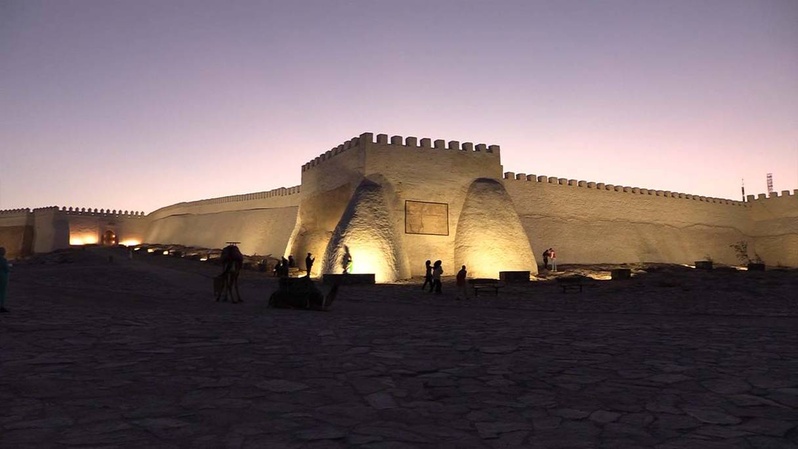
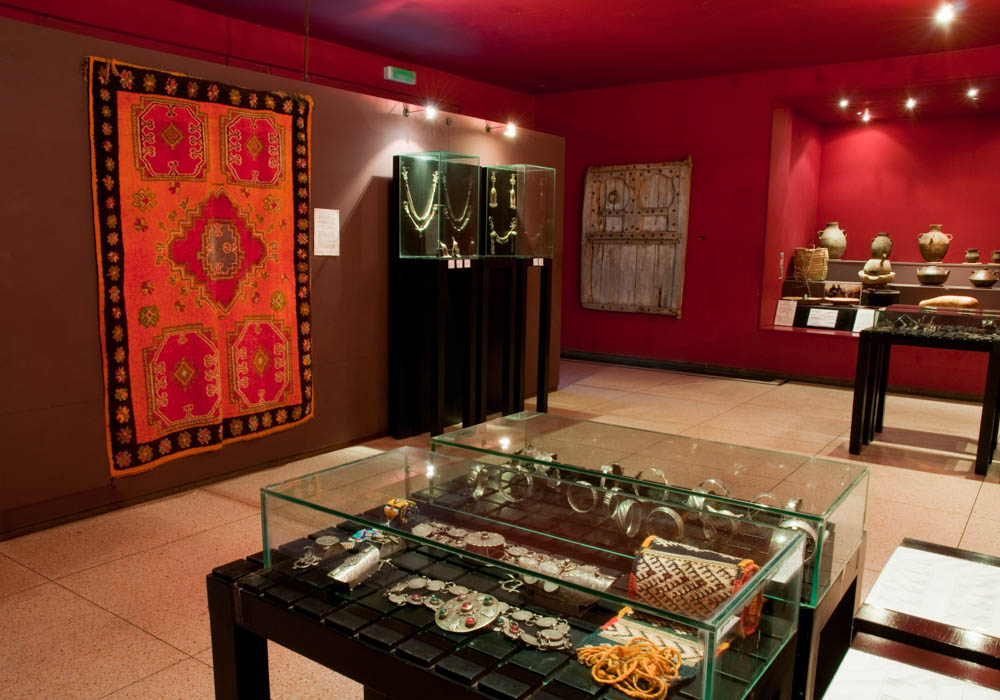
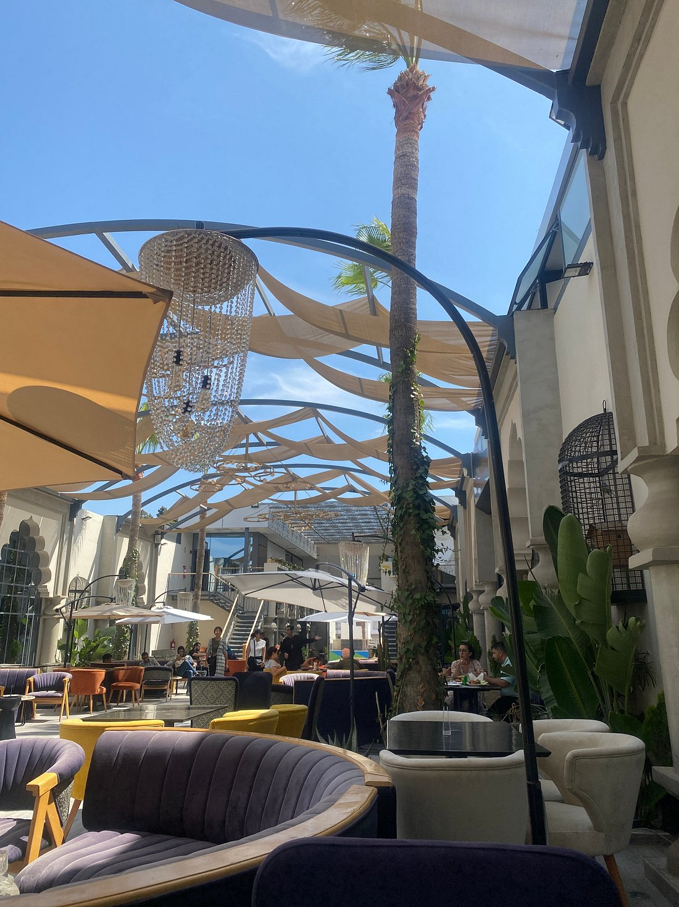

Avec un climat modéré, des plages dorées au sable fin qui s’étendent sur 30 km,et un soleil brillant toute l’année, Agadir est, sans doute, une destination touristique d’excellence et une station balnéaire de choix. Sur sa côte atlantique, hôtels et complexes de loisirs luxueux s’alignent avec des passages plain-pied vers la plage. Distingués par leur architecture marocaine moderne, ils sont bien équipés pour offrir une panoplie de loisirs et d’activités sportives comme le golf, le tennis, l’équitation, etc.sans oublier les cures bien être.
Monumens historiques
Découvrez les trésors historiques d'Agadir, où chaque monument raconte une histoire fascinante ! (flip cards)

Kasbah Oufella
Kasbah Oufella
la Kasbah Agadir Oufella offre une vue impressionnante sur la sublime baie d’Agadir,
ainsi que sur son arrière-pays. De là, on peut admirer la ville qui s’étend à l’horizon,
comme on peut assister à des couchers de soleil magiqueshauts en couleur. Témoins d’un
événement dévastateur, les vestigesde la Kasbah renferment aussi l’histoire d’une citadelle
au passé glorieux.
La Médina
La Médina
La Médina d’Agadir propose une panoplie d’activités qui varient entre restauration basée sur
la gastronomie Marocaine, shopping à travers des boutiques qui offrent des produits d’artisanats
et de terroirs du Maroc, des espaces consacrés aux artisans et aux activités culturelles et des
circuits au niveau du parc. Une mosaïque de sensations !

Musée du patrimoine amazigh
Musée du patrimoine amazigh
un lieu incontournable pour découvrir la richesse culturelle des peuples amazighs du Maroc.
Vous y trouverez une collection exceptionnelle d'objets artisanaux, tels que des bijoux
traditionnels, des poteries, des textiles, et des instruments de musique, témoignant de
l'histoire et des traditions ancestrales de cette région. Le musée propose également des
espaces dédiés à l'art amazigh, des expositions interactives et des ateliers pour plonger
dans l’héritage artistique et culturel amazigh. Une immersion authentique au cœur de l'identité
amazighe !
Activités
Vivez des moments mémorables à Agadir, où chaque activité révèle la richesse de sa culture et nature!
Vallée du paradis
Plongez au cœur de la vallée verte, un havre de paix idéal pour échapper à l’agitation. Entre nature luxuriante et sérénité, c’est la destination parfaite pour une journée d’évasion.
Découvrez le téléphérique d’Agadir, le seul au Maroc, offrant des vues à 360° sur les montagnes de l’Atlas, la Kasbah et l’océan Atlantique. Une expérience inoubliable entre ciel et mer !
Agadir est un paradis pour les amateurs de surf, avec des plages comme Tamraght, idéales pour débutants. Rejoignez ces spots en taxi, voiture ou via la navette économique « Souk to Surf ». Vivez l’expérience des vagues dans un cadre exceptionnel !
Le Souk el Had d’Agadir, avec ses 3000 commerces sur 11 hectares, offre une expérience authentique et colorée. Un lieu animé où les épices et l’atmosphère locale envoûtent les visiteurs !
Savourez des instants délicieux à Agadir, où chaque café et restaurant vous plonge dans une expérience culinaire unique!

Restaurant alf lila ou lila
Le restaurant Alf Lila w Lila, situé au 2 Rue des Souks à Agadir, est un établissement réputé pour sa cuisine marocaine traditionnelle ainsi que ses plats innovants. Avec une ambiance accueillante et un service de qualité, ce café-restaurant obtient en moyenne une note de 4,1 étoiles. Les clients apprécient particulièrement ses plats signature, qui offrent une expérience culinaire mémorable et qui séduisent les sens.
Le restaurant Saykouk, situé au 29 rue Yacoub El Mansour dans le quartier de Talborjt à Agadir, est un lieu prisé pour son ambiance chaleureuse et sa vue panoramique depuis le rooftop. Ce café-restaurant propose une cuisine marocaine et méditerranéenne avec des plats comme les tajines, les briouates, et des spécialités locales revisitées. Il est apprécié pour son décor moderne, inspiré des motifs berbères.
Le Café La Source, situé dans la région de Taghazout près d'Agadir, est une destination appréciée pour sa vue imprenable sur l'océan et son ambiance conviviale. Ce lieu offre une terrasse spacieuse, idéale pour profiter de la brise marine tout en savourant un repas ou un café. La Source sert une variété de plats locaux et internationaux, avec une réputation pour la qualité des plats et du service.